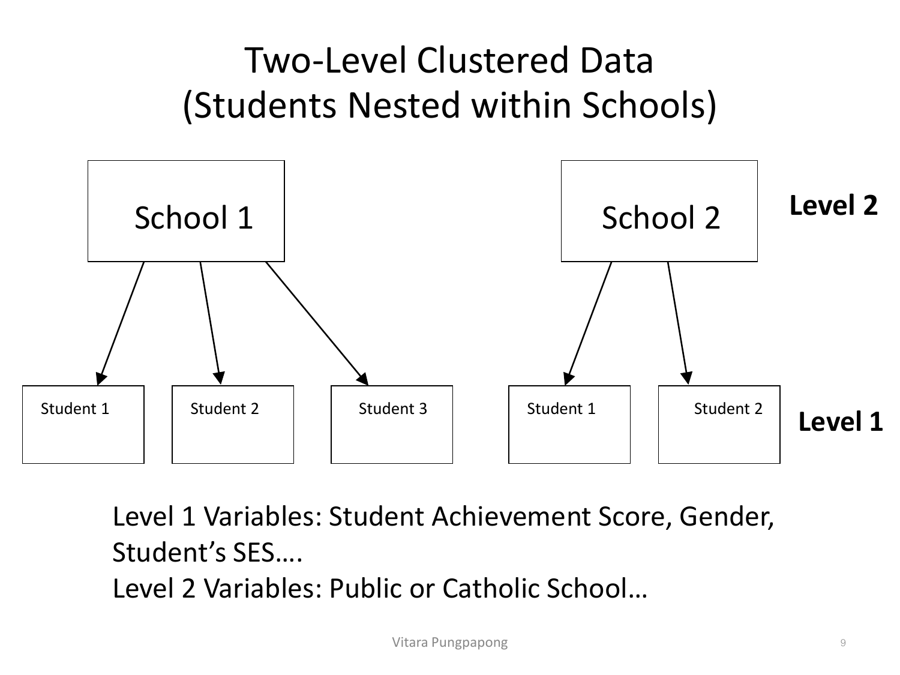
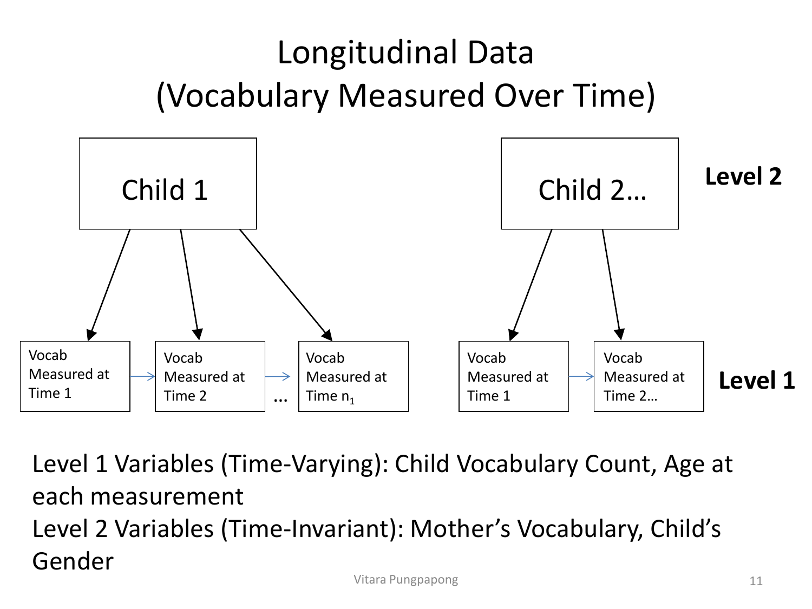
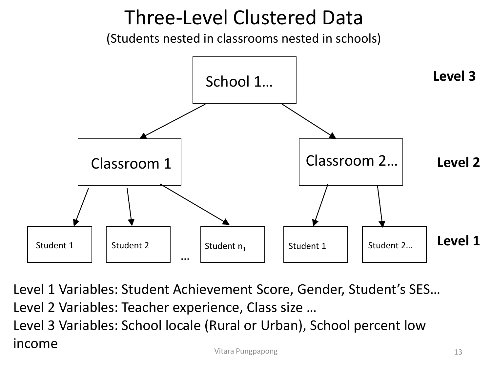
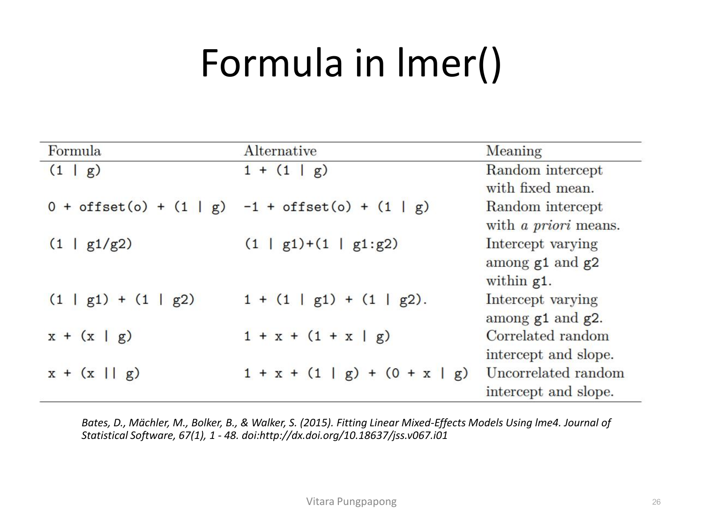
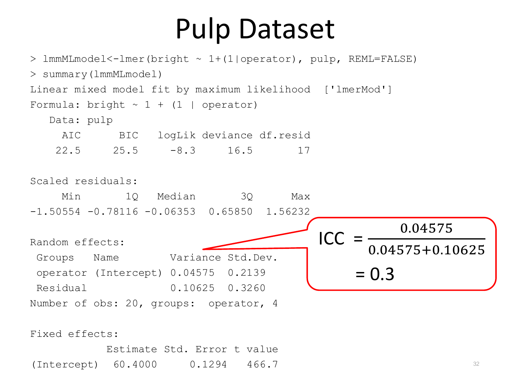
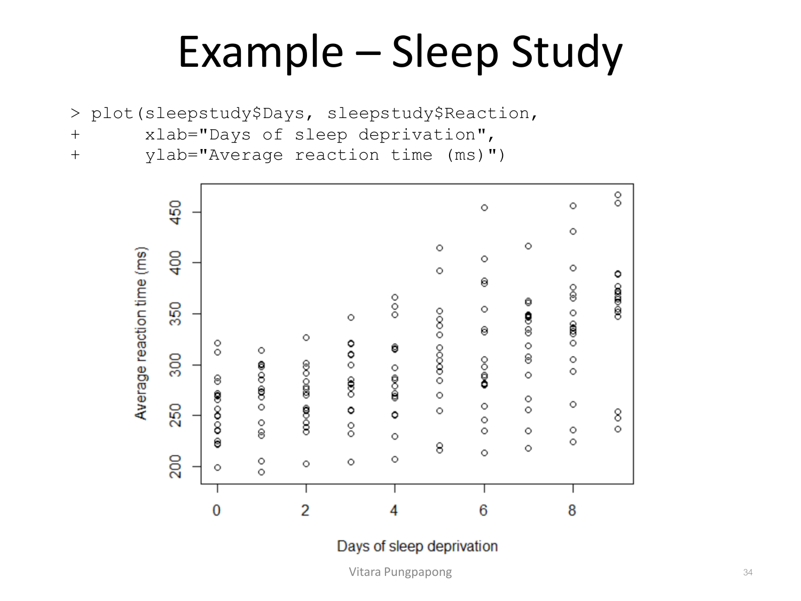
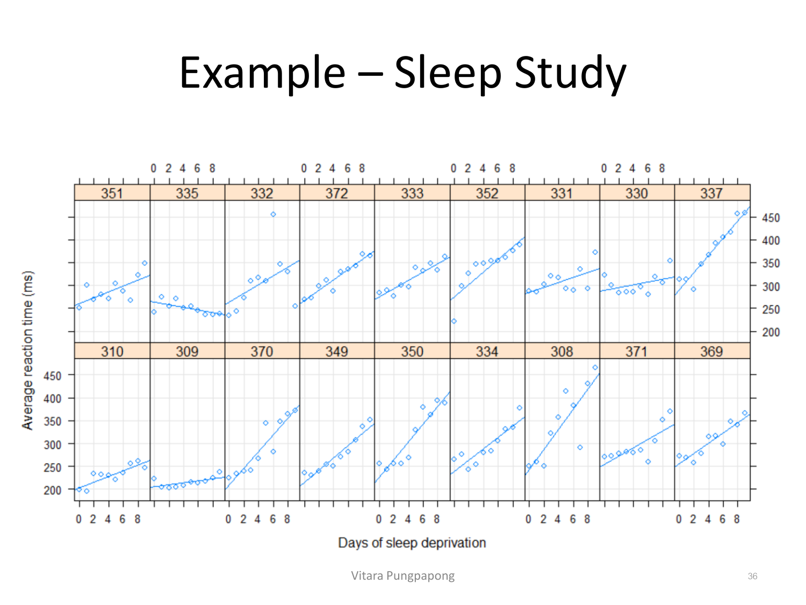
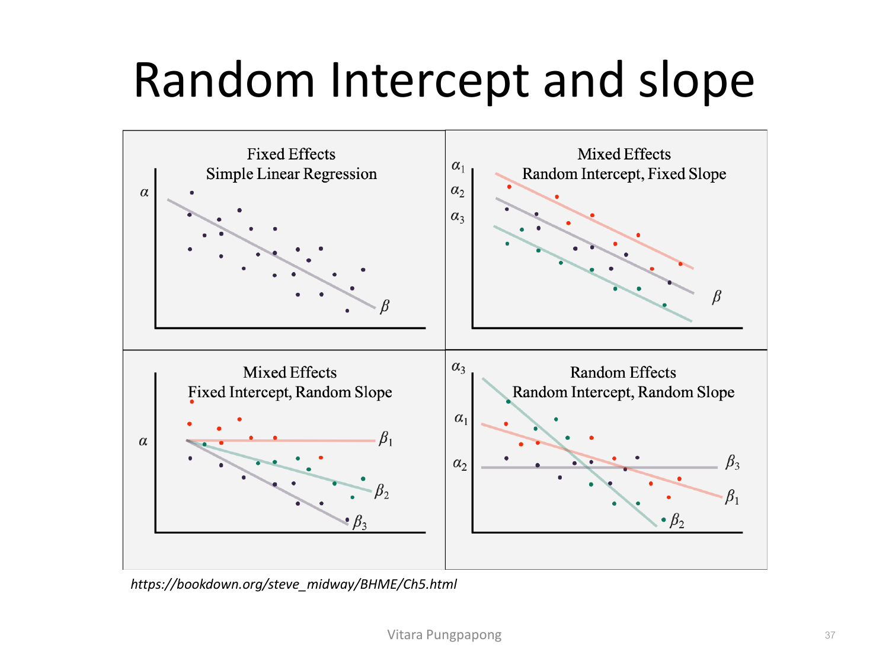
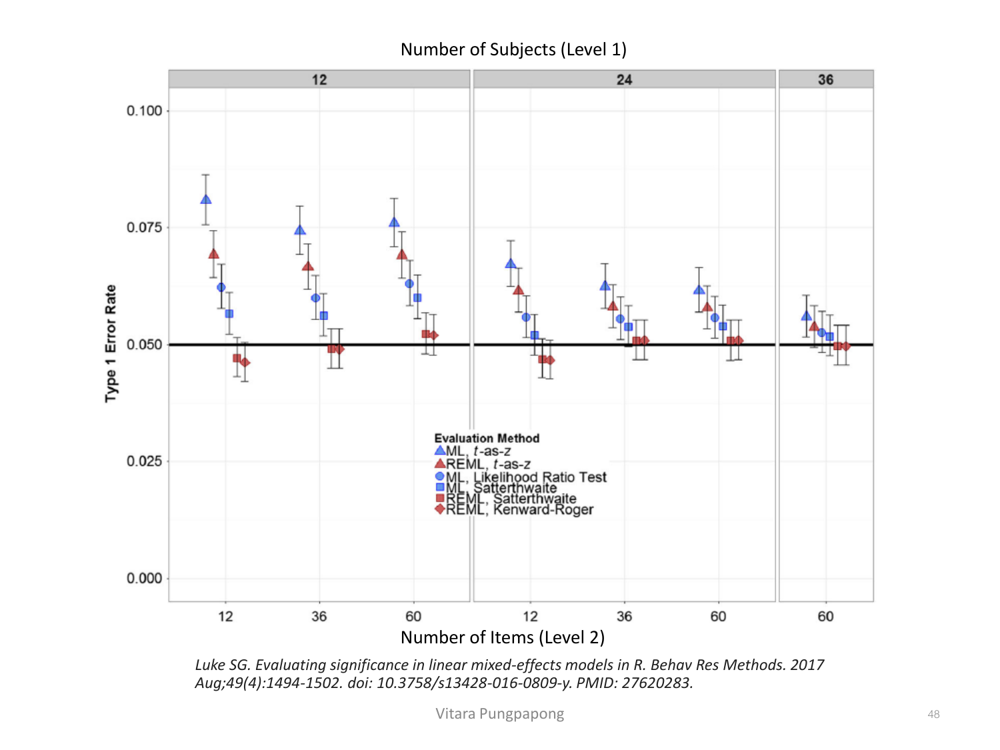
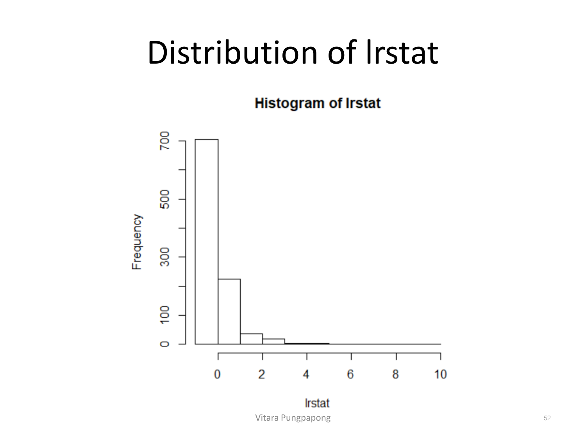

→ ฝึกกับโจทย์จริง: Egg Production + Rat Weight Gain (Assignment 10)
Lecture 14 — Introduction to Linear Mixed-Effects Models (บทสุดท้าย)
บทเรียนนี้ตอบ 4 เรื่องเดิมที่ใช้มาตลอดคอร์ส แต่ในบริบทใหม่ที่ ข้อมูล "ไม่เป็นอิสระต่อกัน" ตั้งแต่ต้น: เขียนสมการโมเดลถูก (แยก fixed effect กับ random effect ให้ชัด), เช็คได้ว่าเมื่อไรต้องใช้ mixed model แทน ordinary regression, อ่าน output จาก summary(lmer(...)) ได้ทุกบรรทัด รวมถึงส่วนที่ไม่เคยเห็นใน lm() (variance ของ random effect), และเขียนประโยคแปลผล ทั้งของ fixed-effect coefficient (แบบเดิม) และของ variance component (แบบใหม่) — นี่คือ Lecture สุดท้ายของวิชา และเป็นคำตอบของคำถามที่ค้างมาตั้งแต่ Lesson 1: "ถ้า error terms ไม่ independent จะทำอย่างไร?"
pulp และ sleepstudy dataset) พร้อม R output เต็มบรรทัดต่อบรรทัด — ดูฟรีได้จาก github.com/robjhyndman/ETC3580.
ย้อนกลับไป Lesson 1 หัวข้อ 4: assumption ของ error term มี 4 ข้อ และข้อที่ 2 คือ "error terms เป็นอิสระต่อกัน (independent)" — ตลอดคอร์สที่ผ่านมา (SLR, MLR, GLM ทุกแบบ) เราสมมติข้อนี้เงียบ ๆ โดยไม่เคยถามว่ามันจริงหรือไม่ Lecture นี้คือคำตอบของคำถามนั้น: เมื่อไรข้อ 2 พัง และพังแล้วต้องทำอย่างไร
สไลด์นิยาม 4 รูปแบบข้อมูลที่ทำให้ error terms ไม่ independent โดยธรรมชาติ: Clustered Data — วัดผลลัพธ์ครั้งเดียวต่อคน แต่คนถูก "nested" อยู่ในกลุ่ม (ครอบครัว โรงเรียน ย่าน) ทำให้คนในกลุ่มเดียวกันมีแนวโน้มคล้ายกัน; Longitudinal Data — วัดผลลัพธ์ซ้ำกับคนเดิมข้ามเวลา ทำให้ค่าที่วัดจากคนเดิมสัมพันธ์กันเอง; Clustered-Longitudinal Data — ผสมทั้งสองแบบ (วัดซ้ำข้ามเวลา และคนยังถูก nested ในกลุ่มอีกชั้น); Repeated Measures Data — วัดผลลัพธ์หลายครั้งกับหน่วยเดิมข้ามมิติใดก็ได้ (เวลา พื้นที่ ฯลฯ) ไม่จำเพาะเวลาอย่างเดียว ทั้งหมดนี้ถูกเรียกรวมว่า Multilevel Data — Level 1 คือระดับต่ำสุดที่วัดตัวแปรตาม ส่วน Level 2, 3, … คือชั้นข้อมูลที่สูงขึ้นซึ่งจับกลุ่ม Level 1 ไว้
ตัวอย่างสองระดับที่สไลด์ใช้: การศึกษาผลของ "ประเภทโรงเรียน (public/catholic)" ต่อคะแนนคณิตศาสตร์ของนักเรียน — นักเรียนแต่ละคนสอบครั้งเดียว แต่นักเรียนถูกจัดกลุ่มอยู่ในโรงเรียน:

อ่านโครงสร้างนี้ให้ทะลุ: School 1 มีนักเรียน 3 คน ส่วน School 2 มีนักเรียน 2 คน — จำนวนหน่วยย่อยต่อกลุ่มไม่เท่ากัน (unbalanced) ซึ่งเป็นเรื่องปกติของข้อมูลจริง ไม่ใช่ข้อยกเว้น ตัวแปรระดับ 1 (คะแนนสอบ เพศ SES ของนักเรียน) เปลี่ยนค่าได้ทีละคน แต่ตัวแปรระดับ 2 (ประเภทโรงเรียน) คงที่สำหรับนักเรียนทุกคนในโรงเรียนเดียวกัน — นี่คือรากของปัญหา: นักเรียน 3 คนใน School 1 ใช้ค่า "ประเภทโรงเรียน" เดียวกันซ้ำ 3 ครั้ง ทำให้คะแนนของนักเรียน 3 คนนี้มีแนวโน้มคล้ายกันมากกว่าคะแนนของนักเรียนที่สุ่มมาจากคนละโรงเรียน (ครูคนเดียวกัน สิ่งแวดล้อมเดียวกัน ทรัพยากรเดียวกัน) — ถ้าฟิต lm() ตรง ๆ โดยไม่จับโครงสร้างนี้ไว้ error ของนักเรียน 3 คนนี้จะสัมพันธ์กันเอง (correlated) ละเมิด assumption ข้อ 2 ทันที
โครงสร้างเดียวกันเกิดกับเวลาแทนที่จะเป็น "กลุ่ม" ได้เช่นกัน — ตัวอย่างศึกษาการเติบโตของคลังคำศัพท์เด็ก วัดคำศัพท์ซ้ำหลายครั้งต่อเด็กคนเดียว:

โครงสร้างนี้สลับตำแหน่งจากภาพก่อนหน้า: หน่วยที่ "nest" คือเวลาแทนที่จะเป็นนักเรียน — Level 1 กลายเป็นตัวแปรที่เปลี่ยนตามเวลา (Time-Varying) เช่นจำนวนคำศัพท์และอายุ ณ ตอนวัด ส่วน Level 2 คือตัวแปรที่คงที่ตลอดเวลาสำหรับเด็กคนนั้น (Time-Invariant) เช่นคลังคำศัพท์ของแม่และเพศของเด็ก — ค่าคำศัพท์ที่วัดจาก Child 1 ที่ Time 1, 2, …, \(n_1\) ล้วนมาจากเด็กคนเดียวกัน จึงสัมพันธ์กันเอง (เด็กที่เริ่มต้นคำศัพท์เยอะ มักจะคำศัพท์เยอะในทุกครั้งที่วัดต่อ ๆ ไปด้วย) — นี่คือ "correlated error" อีกรูปแบบหนึ่งที่มาจากแกนเวลาแทนที่จะเป็นแกนกลุ่ม
ทั้งสองแกน (กลุ่มและเวลา) ยังซ้อนกันได้อีกชั้นเป็น 3 ระดับ เช่น นักเรียนใน "ห้องเรียน" ที่อยู่ใน "โรงเรียน" อีกที:

สังเกตว่าตัวแปรแต่ละระดับผูกกับชั้นที่มันคงที่: ตัวแปรระดับ 1 (คะแนนนักเรียน เพศ SES) เปลี่ยนได้ทีละคน, ระดับ 2 (ประสบการณ์ครู ขนาดห้อง) คงที่สำหรับนักเรียนทุกคนในห้องเดียวกันแต่เปลี่ยนได้ระหว่างห้อง, ระดับ 3 (เขตเมือง/ชนบท สัดส่วนรายได้น้อยของโรงเรียน) คงที่สำหรับทั้งโรงเรียน — ยิ่งชั้นสูง ยิ่งมีการซ้ำค่าตัวแปรมากขึ้นในหน่วยย่อย ยิ่งมีโอกาสที่ correlated error จะรุนแรงขึ้นถ้าไม่จัดการโครงสร้างนี้อย่างถูกต้อง (สไลด์ยังมีตัวอย่างผสม 3 ระดับ + เวลา คือ "คะแนนคณิตศาสตร์วัดซ้ำทุกปีของนักเรียนที่ nested ในโรงเรียน" ซึ่งเป็นการรวมสองแกนที่เพิ่งเห็นเข้าด้วยกัน ไม่มีแนวคิดใหม่เพิ่มจากสองภาพนี้)
lm(score ~ school_type + student_ses) ตรง ๆ โดยไม่จัดการโครงสร้าง "นักเรียน nested ในโรงเรียน" จะละเมิด assumption ข้อใดจาก Lesson 1 โดยตรงที่สุด?lm()) หรือ linear mixed-effects model และอธิบายเหตุผลโดยระบุว่าโครงสร้างข้อมูลนี้เป็นแบบใด (clustered/longitudinal/clustered-longitudinal) กี่ levelควรใช้ linear mixed-effects model ไม่ใช่ lm() ธรรมดา เพราะข้อมูลนี้เป็น clustered-longitudinal data แบบ 3 ระดับ: Level 1 = การวัดความดันแต่ละครั้ง (time-varying, 4 ครั้งต่อคน), Level 2 = ผู้ป่วย (การวัดซ้ำ 4 ครั้งของผู้ป่วยคนเดียวกันสัมพันธ์กันเอง — คนที่ความดันสูงตั้งแต่ต้นมักจะสูงต่อเนื่องทุกเดือน), Level 3 = คลินิก (ผู้ป่วยในคลินิกเดียวกันอาจคล้ายกันจากอุปกรณ์วัด/แพทย์/ประชากรแถบนั้น)
ถ้าฟิต lm() ตรง ๆ กับข้อมูล 600 แถว (150×4) โดยไม่จับโครงสร้างนี้ไว้ โมเดลจะนับความมั่นใจ (effective sample size) เกินจริง — คิดว่ามี 600 observation อิสระ ทั้งที่จริงมีแค่ 150 คนที่เป็นอิสระต่อกัน (การวัดซ้ำในคนเดียวกันไม่ใช่ข้อมูลใหม่ทั้งหมด) ผลคือ standard error ของสัมประสิทธิ์ยาต่ำเกินจริง p-value ต่ำเกินจริง เสี่ยงสรุปว่ายามีผลทั้งที่จริงไม่มีนัยสำคัญ
สไลด์สรุป 3 ปัญหาที่เกิดขึ้นถ้าใช้ single-level analysis (OLS, GLM ปกติ) กับข้อมูลแบบ hierarchical:
Linear Mixed-Effects Models (LMM) ถูกออกแบบมาแก้ทั้ง 3 ปัญหานี้พร้อมกัน โดยการใส่โครงสร้างของข้อมูล (ใครอยู่กลุ่มไหน) เข้าไปในตัวโมเดลโดยตรง แทนที่จะเมินเฉยแล้วสมมติว่าทุก observation อิสระต่อกัน
นี่คือความแตกต่างที่สำคัญที่สุดของบทนี้ สไลด์นิยามไว้ชัดเจน:
Fixed effects มักเป็นจุดสนใจหลักของการวิเคราะห์ ตีความได้เหมือนตัวแปรอิสระใน regression ทั่วไป มาจากข้อมูลชั้นใดก็ได้ (เช่น อายุ เพศ กลุ่มทดลอง ประสบการณ์การสอน) ส่วน random effects มักไม่ใช่จุดสนใจหลัก แต่ทำหน้าที่ "จับ" ความสัมพันธ์ระหว่าง observation ในกลุ่มเดียวกันไว้ — และช่วยแตกความแปรปรวนรวมของ Y ออกเป็นระดับต่าง ๆ ตามโครงสร้างข้อมูล เช่น ถามได้ว่า "คะแนนคณิตศาสตร์ต่างกันเพราะตัวนักเรียนเอง (level 1) มากแค่ไหน เทียบกับต่างกันเพราะโรงเรียน (level 2) มากแค่ไหน" — ข้อสำคัญ: random effect ต้องเป็น grouping factor เสมอ (ตัวแปรที่แบ่งข้อมูลเป็นกลุ่ม เช่น operator, subject, school ไม่ใช่ตัวแปรตัวเลขต่อเนื่องอย่าง age)
สมการทั่วไปของ LMM ที่สไลด์เขียนในรูป matrix:
สมมติฐาน (assumption) ของ \(\boldsymbol{\gamma}\) และ \(\boldsymbol{\varepsilon}\):
อ่านนัยของสูตรสุดท้าย: variance ของ Y แบบไม่มีเงื่อนไข (marginal) ไม่ใช่แค่ \(\sigma^2\mathbf{R}\) (เหมือน error variance ปกติของ lm()) แต่มีพจน์ \(\mathbf{Z}\mathbf{D}\mathbf{Z}^T\) บวกเพิ่มเข้ามา — พจน์นี้คือแหล่งที่มาของความสัมพันธ์ระหว่าง observation ในกลุ่มเดียวกันที่ lm() ธรรมดาไม่มีทางจับได้เลย เพราะ lm() ไม่มี \(\mathbf{Z}\), \(\boldsymbol{\gamma}\), \(\mathbf{D}\) ในสมการตั้งแต่แรก
รูปแบบทั่วไปนี้ เมื่อเขียนเป็นสมการ "ต่อ observation" (scalar form) แบบที่ใช้ตอบข้อสอบ จะได้ตัวอย่างเช่นโมเดล random intercept สำหรับข้อมูล 2 ระดับ (observation j ในกลุ่ม i):
\(\beta_0, \beta_1\) เป็น fixed effect เหมือนเดิมทุกประการ (ค่าคงที่ที่ไม่รู้ค่าจริง ต้องประมาณ) ส่วน \(b_{0i}\) คือ random effect ตัวใหม่ — มันคือ "ค่าเบี่ยงเบนของ intercept เฉพาะกลุ่ม i จากค่า intercept เฉลี่ยของประชากร \(\beta_0\)" สุ่มมาจาก \(N(0, \sigma^2_b)\) — ถ้า \(\sigma^2_b = 0\) โมเดลนี้จะยุบกลับไปเป็น lm() ธรรมดาทันที เพราะทุกกลุ่มมี intercept เดียวกันหมด นี่คือเหตุผลที่ mixed model ถูกมองว่าเป็น "regression ที่ทั่วไปกว่า (generalization)" ไม่ใช่เทคนิคคนละสายกับที่เรียนมา
\(\text{Satisfaction}_{ij} = \beta_0 + \beta_1\,\text{Tenure}_{ij} + b_{0i} + \varepsilon_{ij}\) สำหรับพนักงาน j ในแผนก i
Fixed effects: \(\beta_0\) (ค่าเฉลี่ยความพึงพอใจเมื่อ tenure=0 ของประชากรทั้งหมด), \(\beta_1\) (ผลของ tenure ต่อความพึงพอใจ — ตัวแปรที่สนใจโดยตรง)
Random effect: \(b_{0i}\) = ค่าเบี่ยงเบนของ intercept เฉพาะแผนก i จาก \(\beta_0\) เพราะแผนกเป็น grouping factor ที่ไม่ได้สนใจเปรียบเทียบทีละแผนก แค่ต้องการจับความสัมพันธ์ของพนักงานในแผนกเดียวกันไว้ — \(b_{0i} \sim \text{iid } N(0, \sigma^2_{dept})\)
Error term: \(\varepsilon_{ij} \sim \text{iid } N(0, \sigma^2)\) เป็นอิสระจาก \(b_{0i}\)
ถ้ารู้ variance-covariance matrix \(\mathbf{R}\) และ \(\mathbf{D}\) อยู่แล้ว จะประมาณ \(\boldsymbol{\beta}\) ได้ด้วย weighted least squares:
แต่ในทางปฏิบัติไม่มีใครรู้ \(\mathbf{R}\), \(\mathbf{D}\) ล่วงหน้า — ต้องประมาณจากข้อมูลเช่นกัน ปัญหาคือ classical likelihood สร้างไม่ได้ตรง ๆ เพราะ random effect \(\boldsymbol{\gamma}\) ไม่ได้ถูกสังเกตจริง (unobserved) การประมาณจึงต้องอาศัย marginal distribution ของ Y แทน และมี 2 วิธีหลัก:
lmer() ในทางปฏิบัติlmer() ตั้งค่าเริ่มต้นเป็น REML=TRUE แทนที่จะใช้ ML ตรง ๆ คืออะไร?lmer()ฟิต LMM ด้วยฟังก์ชัน lmer() จาก package lme4:
lmer(formula, data = NULL, REML = TRUE, control =
lmerControl(), start = NULL, verbose = 0L, subset,
weights, na.action, offset, contrasts = NULL,
devFunOnly = FALSE)Formula เขียนแบบ y ~ FEexpr + (REexpr1 | factor1) + (REexpr2 | factor2) + ... โดย FEexpr คือนิพจน์ของ fixed effects (เหมือน lm() ทุกประการ) และ (REexpr | factor) คือนิพจน์ random effect — ส่วนก่อน | บอกว่า "อะไรที่สุ่มได้" (intercept, slope, หรือทั้งคู่) ส่วนหลัง | บอกว่า "สุ่มตาม grouping factor ไหน":

สังเกตความต่างที่ข้อสอบชอบถาม: (1|operator) คือ random intercept เดียว — แต่ละ operator มี intercept เป็นของตัวเอง; x + (x|g) (เช่น Days + (Days|Subject)) คือ random interceptและrandom slope ที่สัมพันธ์กัน (correlated — R จะประมาณค่า correlation ระหว่าง intercept กับ slope ของแต่ละ subject ให้ด้วย); ส่วน x + (x||g) (สองขีดคั่น) คือแบบเดียวกันแต่บังคับให้ intercept กับ slope ไม่สัมพันธ์กัน (uncorrelated) — และ (1|g1/g2) ใช้กับโครงสร้าง nested (g2 อยู่ใน g1) ต่างจาก (1|g1)+(1|g2) ที่ใช้กับโครงสร้าง crossed (g1, g2 ไม่ได้ nested กัน) — ตัวเลือก syntax นี้ต้องเลือกให้ตรงกับโครงสร้างข้อมูลจริง ไม่ใช่เลือกตามใจ เพราะกำหนดว่า \(\mathbf{D}\) (variance-covariance matrix ของ random effect) มีรูปร่างอย่างไร
ข้อมูล pulp มี 20 แถว 2 คอลัมน์ ทดลองวัดความสว่างกระดาษ (bright) จาก operator 4 คน (a,b,c,d) แต่ละคนวัดซ้ำ 5 ครั้ง:
> library(faraway)
> data(pulp)
> head(pulp)
bright operator
1 59.8 a
2 60.0 a
3 60.8 a
4 60.8 a
5 59.8 a
6 59.8 bโครงสร้างนี้คือ clustered data 2 ระดับ (การวัด nested ใน operator) — สนใจแค่ค่าเฉลี่ยความสว่างโดยรวม (ไม่มีตัวแปรอธิบายอื่น) แต่ต้องการจับผลของ operator ไว้เป็น random effect ฟิตด้วย REML (ค่าเริ่มต้น):
> library(lme4)
> lmmmodel<-lmer(bright ~ 1+(1|operator), pulp)
> summary(lmmmodel)
Linear mixed model fit by REML ['lmerMod']
Formula: bright ~ 1 + (1 | operator)
Data: pulp
REML criterion at convergence: 18.6
Scaled residuals:
Min 1Q Median 3Q Max
-1.4666 -0.7595 -0.1244 0.6281 1.6012
Random effects:
Groups Name Variance Std.Dev.
operator (Intercept) 0.06808 0.2609
Residual 0.10625 0.3260
Number of obs: 20, groups: operator, 4
Fixed effects:
Estimate Std. Error t value
(Intercept) 60.4000 0.1494 404.2นี่คือ output ใหม่ที่ lm() ไม่เคยมี: บล็อก "Random effects" — แถว operator (Intercept) บอก variance ของ random intercept ระหว่าง operator = 0.06808 (SD = 0.2609) ส่วนแถว Residual คือ variance ของ error ภายใน operator เดียวกัน = 0.10625 (SD = 0.3260) — สองตัวเลขนี้คือการแตกความแปรปรวนรวมของ bright ออกเป็น "ต่างกันเพราะ operator" กับ "ต่างกันเพราะเหตุสุ่มภายใน operator เดียวกัน" ส่วนบล็อก Fixed effects เหลือแค่ (Intercept) = 60.4000 ซึ่งตีความเหมือนเดิมทุกประการ: ค่าเฉลี่ยความสว่างกระดาษโดยรวม (ข้าม operator ทั้งหมด) ประมาณได้ 60.4
ถ้าฟิตด้วย ML แทน (REML=FALSE) จะได้ AIC/BIC/logLik ที่ ML รองรับ (REML ไม่มีค่าเหล่านี้ให้โดยตรงเพราะฟังก์ชัน likelihood ถูกจำกัดไว้) และสังเกตว่า variance ของ operator เปลี่ยนจาก 0.06808 (REML) เหลือ 0.04575 (ML) — ตรงตามที่อธิบายไว้ในหัวข้อ 4 พอดี ว่า ML ให้ variance component ที่ biased ต่ำกว่า REML:
> lmmMLmodel<-lmer(bright ~ 1+(1|operator), pulp, REML=FALSE)
> summary(lmmMLmodel)
Linear mixed model fit by maximum likelihood ['lmerMod']
Formula: bright ~ 1 + (1 | operator)
Data: pulp
AIC BIC logLik deviance df.resid
22.5 25.5 -8.3 16.5 17
Scaled residuals:
Min 1Q Median 3Q Max
-1.50554 -0.78116 -0.06353 0.65850 1.56232
Random effects:
Groups Name Variance Std.Dev.
operator (Intercept) 0.04575 0.2139
Residual 0.10625 0.3260
Number of obs: 20, groups: operator, 4
Fixed effects:
Estimate Std. Error t value
(Intercept) 60.4000 0.1294 466.7ICC วัดว่าสัดส่วนความแปรปรวนรวมของ Y ที่มาจาก "ความแตกต่างระหว่างกลุ่ม" เป็นเท่าไร เทียบกับความแปรปรวนทั้งหมด:
ตัวอย่างการตีความจากสไลด์: ถ้าโรงเรียนเป็น random effect และผลลัพธ์คือคะแนนสอบ แล้ว ICC = 25% แปลว่า 25% ของความแปรปรวนในคะแนนสอบมาจากความแตกต่างระหว่างโรงเรียน ส่วนที่เหลืออีก 75% มาจากความแตกต่างระหว่างนักเรียนภายในโรงเรียนเดียวกัน — นี่คือประโยคแปลผลมาตรฐานที่ต้องเขียนได้ทุกครั้งที่รายงาน ICC
คำนวณจริงจาก output ของ pulp data (โมเดล ML ด้านบน):

แทนตัวเลขตรง ๆ จากตาราง Random effects: \(\text{ICC} = \dfrac{0.04575}{0.04575 + 0.10625} = 0.3\) — แปลว่า 30% ของความแปรปรวนทั้งหมดในความสว่างกระดาษมาจากความแตกต่างระหว่าง operator (คนละคนวัดได้ค่าเฉลี่ยต่างกันเป็นระบบ) ส่วนอีก 70% มาจากความแปรปรวนภายใน operator คนเดียวกัน (ความคลาดเคลื่อนจากการวัดซ้ำ) — ตัวเลขนี้สูงพอสมควร (0.3) บอกว่า "operator" เป็นแหล่งความแปรปรวนที่สำคัญจริง ๆ ไม่ใช่ปัจจัยรบกวนเล็กน้อยที่มองข้ามได้ ถ้า ICC ใกล้ 0 จะแปลว่าโครงสร้างกลุ่มแทบไม่มีผล และ lm() ธรรมดาก็อาจให้ผลใกล้เคียงกับ mixed model อยู่แล้ว
ข้อมูล sleepstudy มี 180 แถว วัดเวลาปฏิกิริยาเฉลี่ย (Reaction, มิลลิวินาที) ของ 18 คนทุกวันระหว่างถูกจำกัดให้นอนแค่ 3 ชั่วโมง/คืน (Days = จำนวนวันที่อดนอน) — ก่อนฟิตโมเดล พล็อตข้อมูลรวมทุกคนก่อนเสมอ (เหมือนกฎ "ต้อง plot ก่อน" จาก Lesson 1):
> plot(sleepstudy$Days, sleepstudy$Reaction,
+ xlab="Days of sleep deprivation",
+ ylab="Average reaction time (ms)")
ภาพรวมเห็นแนวโน้มขาขึ้นชัดเจน (ยิ่งอดนอนหลายวัน เวลาปฏิกิริยายิ่งช้าลง/มากขึ้น) แต่การพล็อตรวมทุกคนแบบนี้ซ่อนคำถามสำคัญไว้: ทุกคนแย่ลงในอัตราเดียวกันหรือไม่? ต้องแยกดูทีละคนด้วย xyplot() จาก package lattice ถึงจะเห็น:
> library(lattice)
> xyplot(Reaction ~ Days | Subject, sleepstudy, type = c("g","p","r"),
+ index = function(x,y) coef(lm(y ~ x))[1],
+ xlab = "Days of sleep deprivation",
+ ylab = "Average reaction time (ms)", aspect = "xy")
นี่คือภาพที่ตอบคำถามได้ตรง ๆ: subject 308 (แถวล่าง คอลัมน์ที่ 6) เส้นชันมากจาก ~230ms พุ่งขึ้นไปเกือบ 460ms ภายใน 9 วัน ในขณะที่ subject 335 (แถวบน คอลัมน์ที่ 2) เส้นเกือบราบ แทบไม่เปลี่ยนจาก ~270ms เลยตลอด 9 วัน — ทั้งจุดเริ่มต้น (intercept) และความชัน (slope) ต่างกันอย่างชัดเจนระหว่างคน ไม่ใช่แค่ intercept อย่างเดียวแบบตัวอย่าง pulp — นี่คือสัญญาณว่าโมเดลควรมี ทั้ง random intercept และ random slope ไม่ใช่ random intercept เดี่ยว มิฉะนั้นโมเดลจะบังคับให้ทุกคน "แย่ลงในอัตราเดียวกันทุกคน" ซึ่งขัดกับสิ่งที่เห็นในภาพตรง ๆ
แนวคิดนี้สรุปเป็นภาพนามธรรม 4 แบบได้ดังนี้ — เทียบ fixed-effect regression ธรรมดา (บนซ้าย) กับ mixed model 3 แบบย่อย:

อ่านทีละแผง: แผงบนซ้าย (Fixed Effects) คือ SLR ปกติจาก Lesson 1 — เส้นเดียวสำหรับทุกกลุ่ม ไม่มี random effect เลย; แผงบนขวา (Random Intercept, Fixed Slope) — เส้นขนานกัน 3 เส้นที่จุดเริ่มต้น \(\alpha_1\), \(\alpha_2\), \(\alpha_3\) ต่างกัน แต่ความชัน \(\beta\) เท่ากันทุกกลุ่ม (นี่คือโมเดล pulp ในหัวข้อ 6 ขยายให้มี slope ด้วย); แผงล่างซ้าย (Fixed Intercept, Random Slope) — ทุกเส้นเริ่มจากจุดเดียวกัน \(\alpha\) แต่ความชัน \(\beta_1\), \(\beta_2\), \(\beta_3\) แตกต่างกัน (พบน้อยในทางปฏิบัติ เพราะปกติแล้วถ้า slope ต่างกัน intercept ก็มักต่างกันด้วย); แผงล่างขวา (Random Intercept, Random Slope) — ทั้งจุดเริ่มต้น \(\alpha_1\), \(\alpha_2\) และความชัน \(\beta_1\), \(\beta_2\) ต่างกันหมด เส้นตัดกันเองได้ — นี่คือแบบที่ตรงกับข้อมูล sleep study ในภาพ xyplot ด้านบน เพราะทั้งจุดเริ่มต้นและอัตราการแย่ลงต่างกันชัดเจนระหว่างคน
> model1 <- lmer(Reaction ~ Days + (1| Subject), sleepstudy)
> summary(model1)
...
Random effects:
Groups Name Variance Std.Dev.
Subject (Intercept) 1378.2 37.12
Residual 960.5 30.99
Number of obs: 180, groups: Subject, 18
Fixed effects:
Estimate Std. Error t value
(Intercept) 251.4051 9.7467 25.79
Days 10.4673 0.8042 13.02
Correlation of Fixed Effects:
(Intr)
Days -0.371โมเดลนี้ยังบังคับให้ทุกคน "แย่ลงในอัตราเดียวกัน" ที่ 10.4673 ms/วัน (เพราะยังไม่มี random slope) มีแค่จุดเริ่มต้น (intercept) ที่ต่างกันระหว่างคน (variance = 1378.2) — จากภาพ xyplot ที่เพิ่งเห็น รู้อยู่แล้วว่านี่ยังไม่ใช่โมเดลที่ตรงกับข้อมูลที่สุด ต้องขยายเป็น random slope ด้วย:
> model2 <- lmer(Reaction ~ Days + (Days | Subject), sleepstudy)
> summary(model2)
...
Random effects:
Groups Name Variance Std.Dev. Corr
Subject (Intercept) 612.10 24.741
Days 35.07 5.922 0.07
Residual 654.94 25.592
Number of obs: 180, groups: Subject, 18
Fixed effects:
Estimate Std. Error t value
(Intercept) 251.405 6.825 36.838
Days 10.467 1.546 6.771
Correlation of Fixed Effects:
(Intr)
Days -0.138บล็อก Random effects ตอนนี้มี 3 บรรทัดแทนที่จะเป็น 2: variance ของ random intercept (612.10), variance ของ random slope สำหรับ Days (35.07), และคอลัมน์ Corr ใหม่ (= 0.07) ที่บอกความสัมพันธ์ระหว่าง random intercept กับ random slope ของแต่ละคน (ใกล้ 0 แปลว่าจุดเริ่มต้นของคนไม่ค่อยสัมพันธ์กับอัตราการแย่ลงของเขา) — สังเกตว่า Fixed effects แทบไม่เปลี่ยนจาก model1 เลย (Days ยังคง ≈10.47) แต่ Std. Error ของ Days เปลี่ยนจาก 0.8042 เป็น 1.546 (เกือบเท่าตัว) — นี่คือผลโดยตรงของการยอมรับว่าคนแต่ละคนมีอัตราการแย่ลงต่างกัน (มี "unmodeled heterogeneity" น้อยลง) ทำให้ความไม่แน่นอนของค่าเฉลี่ยประชากรถูกประเมินอย่างซื่อสัตย์มากขึ้น (ไม่ต่ำเกินจริงเหมือน model1)
Fixed effect (Days = 10.467): ตีความเหมือน slope ปกติจาก Lesson 1 ทุกประการ — "จากข้อมูลนี้ เมื่อจำนวนวันที่อดนอนเพิ่มขึ้น 1 วัน เวลาปฏิกิริยาเฉลี่ยของประชากร (population-average) คาดว่าจะเพิ่มขึ้นโดยเฉลี่ย 10.467 มิลลิวินาที"
Variance component (ส่วนที่ต้องเพิ่มใหม่): "ความแปรปรวนของ random intercept ระหว่างคน = 612.10 (SD ≈ 24.74 ms) แปลว่าคนแต่ละคนมี baseline reaction time (ตอน Days=0) ต่างกันมากพอสมควรจากค่าเฉลี่ยประชากร และความแปรปรวนของ random slope = 35.07 (SD ≈ 5.92 ms/วัน) แปลว่าอัตราการแย่ลงต่อวันก็ต่างกันระหว่างคนด้วย ไม่ใช่ทุกคนแย่ลงในอัตรา 10.467 ms/วันเป๊ะตามค่าเฉลี่ย"
(ก) "เมื่อจำนวนวันที่อดนอนเพิ่มขึ้น 1 วัน เวลาปฏิกิริยาเฉลี่ย (Reaction) ของประชากรคาดว่าจะเพิ่มขึ้นโดยเฉลี่ย 10.467 มิลลิวินาที" (ตีความเหมือน slope ธรรมดา — นี่คือ "ค่าเฉลี่ยของประชากร" ไม่ใช่ค่าของคนใดคนหนึ่ง)
(ข) "ความแปรปรวนของ random slope (Days) = 35.07 (SD ≈ 5.92 ms) บอกว่าอัตราการแย่ลงต่อวันไม่เท่ากันในทุกคน — บางคนแย่ลงเร็วกว่า 10.467 ms/วันมาก บางคนช้ากว่า การมี random slope นี้ทำให้โมเดลยอมรับความแตกต่างระหว่างบุคคล (individual heterogeneity) แทนที่จะบังคับให้ทุกคนมีอัตราแย่ลงเท่ากันหมดแบบ model1"
ข้อมูลคะแนนสอบมาตรฐาน (normexam) ของนักเรียน 4,059 คน จาก 65 โรงเรียนใน Inner London สนใจผลของเพศ (sex) เป็น fixed effect ส่วน random effect มี2 ชั้นซ้อนกัน: นักเรียนแต่ละคน nested ในโรงเรียน (school:student) และโรงเรียนเอง (school):
> library(mlmRev)
> data(Exam)
>
> model<-lmer(normexam ~ sex+(1|school)+(1|school:student), data=Exam)
> summary(model)
Random effects:
Groups Name Variance Std.Dev.
school:student (Intercept) 0.006205 0.07877
school (Intercept) 0.164316 0.40536
Residual 0.833451 0.91294
Number of obs: 4059, groups: school:student, 4055; school, 65
Fixed effects:
Estimate Std. Error t value
(Intercept) 0.10003 0.05576 1.794
sexM -0.26154 0.04028 -6.493
Correlation of Fixed Effects:
(Intr)
sexM -0.312ตอนนี้มี variance component 3 ชั้นให้แตกความแปรปรวนรวมของคะแนนสอบ: school (0.164316, ต่างกันเพราะโรงเรียน), school:student (0.006205, ต่างกันเพราะตัวนักเรียนเองภายในโรงเรียน — เล็กมากเมื่อเทียบกับอีกสองตัว) และ Residual (0.833451, ความแปรปรวนที่เหลือ) — สังเกตว่า groups: school:student, 4055 ไม่เท่ากับ 4059 (จำนวนนักเรียนทั้งหมด) พอดี เพราะมีนักเรียนบางคนที่ข้อมูลซ้ำ/ไม่ครบทำให้ R นับกลุ่มได้ไม่เท่าจำนวนแถวเป๊ะ — เป็นเรื่องปกติของข้อมูลจริงที่ไม่สมบูรณ์แบบ ส่วน Fixed effect sexM = -0.26154 ตีความว่า "เมื่อเทียบกับเพศหญิง (baseline) นักเรียนชายมีคะแนนสอบมาตรฐานเฉลี่ยต่ำกว่าโดยเฉลี่ย 0.26154 หน่วย (อย่างมีนัยสำคัญ เพราะ t=-6.493 มีขนาดใหญ่)"
(1|school)+(1|school:student) ถึงใช้ school:student แทนที่จะเขียนแค่ (1|student) เฉย ๆ?สังเกตว่าทุก output ของ lmer() ด้านบนมีคอลัมน์ t value แต่ไม่มีคอลัมน์ Pr(>|t|) เหมือน summary(lm(...)) เลย — นี่ไม่ใช่ความบกพร่องของฟังก์ชัน แต่เป็นเพราะ degrees of freedom ของ mixed model ไม่ชัดเจนแบบ lm() (ไม่รู้ต้องหักลบเท่าไรให้ random effect) ผู้พัฒนา lme4 จึงเลือกไม่ใส่ p-value มาให้เอง สไลด์สรุปวิธีคำนวณ p-value ที่ใช้กันจริง 5 แนวทาง พร้อมข้อจำกัดของแต่ละวิธี:
ข้อควรระวังสำคัญ: ถ้าฟิตด้วย REML การเทียบ LRT ระหว่างโมเดลที่มี fixed-effect structure ต่างกันไม่มีความหมาย เพราะ REML criterion มีพจน์ที่เปลี่ยนไปตาม fixed-effect structure ทำให้เทียบกันไม่ได้ตรง ๆ — ต้องฟิตด้วย ML ก่อนถึงจะใช้ LRT เทียบ fixed effect ระหว่างโมเดลได้อย่างถูกต้อง (RE structure เทียบด้วย REML ได้ตามปกติ จะเห็นในหัวข้อ 11):
> fullmodel<-lmer(Reaction ~ Days + (Days | Subject), sleepstudy,
REML=FALSE)
> reducedmodel<-lmer(Reaction ~ 1 + (Days | Subject), sleepstudy,
REML=FALSE)
> as.numeric(2*(logLik(fullmodel)-logLik(reducedmodel)))
[1] 23.53654
> pchisq(23.53654,df=1,lower=FALSE)
[1] 1.225638e-06
> anova(fullmodel, reducedmodel)
Data: sleepstudy
Models:
reducedmodel: Reaction ~ 1 + (Days | Subject)
fullmodel: Reaction ~ Days + (Days | Subject)
npar AIC BIC logLik deviance Chisq Df Pr(>Chisq)
reducedmodel 5 1785.5 1801.4 -887.74 1775.5
fullmodel 6 1763.9 1783.1 -875.97 1751.9 23.537 1 1.226e-06 ***
---
Signif. codes: 0 '***' 0.001 '**' 0.01 '*' 0.05 '.' 0.1 ' ' 1อ่าน output: fullmodel มี Days เป็น fixed effect ส่วน reducedmodel ตัด Days ออก (เหลือแค่ intercept) — สถิติทดสอบ LRT = \(2\times(\log\text{Lik(full)} - \log\text{Lik(reduced)}) = 23.537\) เทียบกับ \(\chi^2(df=1)\) ได้ p-value = \(1.226\times10^{-6}\) ต่ำมาก จึงปฏิเสธ \(H_0\) ว่า Days ไม่มีผล — npar ต่างกัน 1 (6 กับ 5) ตรงกับ Df=1 ในตาราง anova() พอดี (เสีย 1 parameter ให้กับ fixed-effect Days ที่ถูกตัดออก)
> summary(fullmodel)
Random effects:
Groups Name Variance Std.Dev. Corr
Subject (Intercept) 565.48 23.780
Days 32.68 5.717 0.08
Residual 654.95 25.592
Number of obs: 180, groups: Subject, 18
Fixed effects:
Estimate Std. Error t value
(Intercept) 251.405 6.632 37.907
Days 10.467 1.502 6.968วิธี t-as-z คือเอา t value = 6.968 ไปเทียบกับ standard normal distribution ตรง ๆ (เหมือนไม่มี df จำกัด) — ได้ p-value ต่ำมากเกือบแน่นอนเมื่อ |t| ใหญ่ขนาดนี้ แต่ตามที่ Luke (2017) เตือนไว้ วิธีนี้ anti-conservative โดยเฉพาะเมื่อจำนวน subject น้อย
> library(lmerTest)
> model<-lmer(Reaction ~ Days + (Days | Subject), sleepstudy, REML=TRUE)
> summary(model, ddf = "Kenward-Roger")
Random effects:
Groups Name Variance Std.Dev. Corr
Subject (Intercept) 612.10 24.741
Days 35.07 5.922 0.07
Residual 654.94 25.592
Number of obs: 180, groups: Subject, 18
Fixed effects:
Estimate Std. Error df t value Pr(>|t|)
(Intercept) 251.405 6.825 17.000 36.838 < 2e-16 ***
Days 10.467 1.546 17.000 6.771 3.26e-06 ***
---
Signif. codes: 0 '***' 0.001 '**' 0.01 '*' 0.05 '.' 0.1 ' ' 1ต้องใช้ package lmerTest เสริม lme4 ถึงจะได้คอลัมน์ df และ Pr(>|t|) เพิ่มมาแบบนี้ — df=17.000 ที่นี่ไม่ใช่ \(n-p\) ธรรมดา แต่มาจากสูตรประมาณของ Kenward-Roger ที่คำนึงถึงโครงสร้าง random effect ด้วย ได้ p-value = \(3.26\times10^{-6}\) ซึ่งใกล้เคียงกับ LRT (\(1.226\times10^{-6}\)) และ t-as-z แต่คำนวณมาอย่างระมัดระวังกว่า — ตัวเลือก ddf="Satterthwaite" ในตัวอย่างนี้ให้ตัวเลขทุกตัวเหมือนกันเป๊ะกับ Kenward-Roger (df=17.000, p=3.26e-06) เพราะข้อมูล sleep study มีโครงสร้างสมดุล (แต่ละ subject มี 10 observation เท่ากัน) — ในข้อมูลที่ไม่สมดุล (unbalanced) สองวิธีนี้อาจให้ df ต่างกันได้
ทำไมต้องระวังเลือกวิธีให้เหมาะกับขนาดข้อมูล — สไลด์อ้างงานของ Luke (2017) ที่จำลองข้อมูลหลายขนาด (จำนวน subject × จำนวน item) แล้ววัด Type I Error Rate ของแต่ละวิธี (เส้นดำ = ระดับที่ควรจะเป็นพอดี 0.05):

อ่านภาพ: ที่ panel ซ้ายสุด (12 subjects, 12 items — ตัวอย่างเล็ก) จุดสามเหลี่ยม (ML t-as-z, REML t-as-z) และวงกลม (ML LRT) อยู่สูงกว่าเส้น 0.05 อย่างชัดเจน (ประมาณ 0.06-0.09) แปลว่าวิธีเหล่านี้ปฏิเสธ \(H_0\) บ่อยเกินจริงเมื่อ \(H_0\) เป็นจริง (ยืนยัน "anti-conservative" ตามที่ Luke (2017) และ Barr et al. (2013) เตือนไว้) ในขณะที่จุดสี่เหลี่ยม/เพชร (Satterthwaite, Kenward-Roger) อยู่ใกล้เส้น 0.05 มากในทุกขนาดตัวอย่าง รวมถึงตัวอย่างเล็ก — สรุปเชิงปฏิบัติ: ถ้าจำนวน subject/item น้อย ควรเลือก Kenward-Roger หรือ Satterthwaite เป็นค่าเริ่มต้น ไม่ใช่ t-as-z หรือ LRT
summary(lmer(...)) ให้ t value แต่ไม่ให้ p-value มาโดยตรง เพราะเหตุผลใด?REML=FALSE (ML) ไม่ใช่ REML?บางครั้งอยากรู้ว่า random effect ที่ใส่ไปจำเป็นจริงหรือไม่ (เช่น "operator" มีผลจริงหรือแค่ noise) ตั้งสมมติฐาน:
ปัญหาคือ \(\sigma^2_D = 0\) อยู่ที่ขอบเขตของพารามิเตอร์ (boundary) (variance ติดลบไม่ได้) ทำให้การแจกแจงของ LRT ภายใต้ \(H_0\) ไม่ใช่ \(\chi^2\) มาตรฐานแบบปกติ แต่เป็นส่วนผสม (mixture) ของ \(\chi^2_0\) กับ \(\chi^2_1\) (Liang and Self, 1996) — Crainiceanu and Ruppert (2004) แสดงว่าการใช้ mixture นี้เป็นการประมาณแบบระมัดระวังเกินไป (conservative) ต่อ finite-sample distribution จริง คำแนะนำคือใช้ parametric bootstrap แทนเพื่อ p-value ที่แม่นยำกว่า
ตัวอย่าง pulp data: ทดสอบว่า operator (random intercept) จำเป็นหรือไม่ เทียบกับโมเดลว่าง (ไม่มี random effect เลย, ใช้ lm() ธรรมดา):
> lmmmodel<-lmer(bright ~ 1+(1|operator), pulp, REML=FALSE)
> nullmodel<-lm(bright ~ 1, pulp)
> LRT<-as.numeric(2*(logLik(lmmmodel)-logLik(nullmodel)))
> LRT
[1] 2.568371
>
> # Perform parametric bootstrap
> lrstat<-numeric(1000)
> for(i in 1:1000){
+ y <- unlist(simulate(nullmodel))
+ bnull <- lm(y ~ 1)
+ bootpulp<-cbind(pulp, y)
+ balt <- lmer(y ~ 1+(1|operator), bootpulp, REML=FALSE)
+ lrstat[i] <- as.numeric(2*(logLik(balt)-logLik(bnull)))
+ }
> pvalue<-sum(lrstat>=LRT)/1000
> pvalue
[1] 0.019แนวคิดของ parametric bootstrap: จำลองข้อมูลใหม่ 1,000 ชุดภายใต้สมมติฐานว่า \(H_0\) เป็นจริง (ไม่มี operator effect เลย, มาจาก nullmodel) แล้วคำนวณค่า LRT ของแต่ละชุดจำลอง (lrstat) — ได้การแจกแจงของ LRT ภายใต้ \(H_0\) จริง ๆ แบบ empirical แทนที่จะพึ่งทฤษฎี \(\chi^2\) ที่รู้อยู่แล้วว่าไม่แม่นตรง ๆ:

ฮิสโตแกรมนี้เบ้ขวาอย่างรุนแรง — ค่า lrstat ส่วนใหญ่ (~700 จาก 1,000 รอบ) กระจุกอยู่ใกล้ 0 พอดี ตรงตามที่คาดไว้ว่า mixture ของ \(\chi^2_0\) (มวลก้อนที่ 0) กับ \(\chi^2_1\) ควรมีรูปร่างแบบนี้ — ไม่ใช่รูประฆังแบบ \(\chi^2\) ธรรมดา ซึ่งยืนยันเหตุผลที่ต้องใช้ bootstrap แทนการอ่านตาราง \(\chi^2\) มาตรฐานตรง ๆ p-value ที่ได้คือสัดส่วนของ 1,000 ค่านี้ที่ \(\geq \text{LRT}\) ที่สังเกตได้จริง (2.568) = 19/1000 = 0.019 — น้อยกว่า 0.05 จึงสรุปได้ว่า random effect ของ operator จำเป็นต้องมีในโมเดล (ปฏิเสธ \(H_0: \sigma^2_D=0\))
วิธีเดียวกันนี้ยังใช้สร้าง confidence interval แบบ bootstrap ให้กับพารามิเตอร์ variance component ได้ด้วย (ผ่าน confint(..., method="boot")):
> confint(lmmmodel, method="boot", nsim=1000)
Computing bootstrap confidence intervals ...
117 message(s): boundary (singular) fit: see
help('isSingular')
2.5 % 97.5 %
.sig01 0.0000000 0.5139118
.sigma 0.2159882 0.4278643
(Intercept) 60.0912278 60.6986412สังเกต 2 จุด: (1) .sig01 (SD ของ random intercept operator) มี CI = (0, 0.514) — ขอบล่างชนที่ 0 พอดี สอดคล้องกับธรรมชาติของ variance ที่ติดลบไม่ได้ (2) มีคำเตือน "117 message(s): boundary (singular) fit" แปลว่าใน 117 จาก 1,000 รอบ bootstrap โมเดลประมาณ variance ของ operator ได้ = 0 พอดี (ชนขอบเขต) — ธรรมชาติของปัญหานี้ (boundary problem) คือสาเหตุที่การทดสอบ random effect ต้องระวังเป็นพิเศษ ตรงตามที่อธิบายไว้ข้างต้น
\(R^2\) แบบเดิมจาก Lesson 1 (\(SSR/SST\)) ไม่มีนิยามตรงไปตรงมาสำหรับ mixed model เพราะความแปรปรวนถูกแตกเป็นหลายชั้น สไลด์อ้างวิธีของ Nakagawa et al. (2017) ที่แยกเป็น 2 ค่า:
> model<-lmer(Reaction ~ Days + (Days | Subject), sleepstudy, REML=TRUE)
> library(performance)
> r2(model)
# R2 for Mixed Models
Conditional R2: 0.799
Marginal R2: 0.279ตัวเลขจริง: Marginal \(R^2\) = 0.279 หมายความว่า Days ตัวแปรเดียว (fixed effect) อธิบายความแปรปรวนของ Reaction ได้แค่ 27.9% — แต่ Conditional \(R^2\) = 0.799 หมายความว่าเมื่อรวม random effect (ความแตกต่างเฉพาะบุคคลของ intercept และ slope) เข้าไปด้วย โมเดลอธิบายได้ถึง 79.9% — ส่วนต่างระหว่างสองค่านี้ (0.799 − 0.279 = 0.52) คือสัดส่วนความแปรปรวนที่มาจากความแตกต่างระหว่างบุคคลล้วน ๆ ซึ่งใหญ่กว่าผลของตัวแปร Days เองเสียอีก — สะท้อนสิ่งที่เห็นในภาพ xyplot ของหัวข้อ 8: คนต่างกันมากทั้ง baseline และอัตราการแย่ลง
ดึงค่าประมาณ fixed effect และ random effect ออกมาแยกกันได้ด้วย fixef() และ ranef():
> fixef(model)
(Intercept) Days
251.40510 10.46729
> ranef(model)
$Subject
(Intercept) Days
308 2.2585509 9.1989758
309 -40.3987381 -8.6196806
310 -38.9604090 -5.4488565
330 23.6906196 -4.8143503
331 22.2603126 -3.0699116
332 9.0395679 -0.2721770
333 16.8405086 -0.2236361
334 -7.2326151 1.0745816
335 -0.3336684 -10.7521652
…ranef() ให้ค่าประมาณของ \(b_{0i}, b_{1i}\) แต่ละคน (เรียกว่า BLUP — Best Linear Unbiased Predictor ซึ่งมาจากมุมมอง empirical Bayes: หาค่าเฉลี่ยภายหลัง (posterior mean) \(E[\boldsymbol{\gamma}|\mathbf{Y}]\) โดยที่ \(f(\boldsymbol{\gamma}|\mathbf{Y}) \propto f(\mathbf{Y}|\boldsymbol{\gamma})f(\boldsymbol{\gamma})\)) — อ่านตัวเลขจริง: subject 308 มี random intercept = +2.26 (เริ่มต้นสูงกว่าค่าเฉลี่ยประชากรเล็กน้อย) แต่ random slope = +9.20 (แย่ลงเร็วกว่าค่าเฉลี่ยประชากรมาก) รวมกับ fixed effect แล้ว intercept จริงของ subject 308 คือ \(251.405+2.26=253.67\) และ slope จริงคือ \(10.467+9.20=19.67\) ms/วัน — เกือบเท่าตัวของอัตราเฉลี่ยประชากร ตรงกับที่เห็นในภาพ xyplot หัวข้อ 8 (subject 308 เป็นเส้นที่ชันที่สุดเส้นหนึ่ง) ในทางกลับกัน subject 309 มี intercept=-40.40 และ slope=-8.62 (เริ่มต้นต่ำกว่าเฉลี่ยมาก และแทบไม่แย่ลงเลย/ดีขึ้นด้วยซ้ำ) — ตรงกับเส้นเกือบราบของ subject 309 (ป้ายชื่อ 335 ในภาพเดิมของสไลด์ใช้ subject คนละตัวอย่าง แต่หลักการอ่านเดียวกัน)
ตรวจสอบข้อมูลดิบของ subject 308 ก่อนทำนาย:
> sleepstudy[sleepstudy$Subject=="308",]
Reaction Days Subject
1 249.5600 0 308
2 258.7047 1 308
3 250.8006 2 308
4 321.4398 3 308
5 356.8519 4 308
6 414.6901 5 308
7 382.2038 6 308
8 290.1486 7 308
9 430.5853 8 308
10 466.3535 9 308ข้อมูลมีแค่ Days=0 ถึง 9 ต่อคน — ถ้าอยากทำนาย Reaction ของ subject 308 ที่ Days=10,11,12 (นอกช่วงข้อมูลจริงที่สังเกตมา — extrapolation เหมือนที่เตือนไว้ตั้งแต่ Lesson 1) ใช้ predict() โดยระบุทั้ง Days และ Subject (เพราะโมเดลต้องรู้ว่าจะใช้ BLUP ของคนไหน):
> Days<-10:12
> Subject<-factor(rep("308",3), levels=levels(sleepstudy$Subject))
> newdata<-data.frame(Days=Days, Subject=Subject)
> predict(model, newdata)
1 2 3
450.3263 469.9925 489.6588ตรวจตัวเลข: ที่ Days=10, \(\text{ค่าทำนาย} = (251.405+2.26) + (10.467+9.20)\times10 = 253.67+196.67=450.3\) ตรงกับ 450.3263 ที่ได้จริง (คลาดเคลื่อนจากการปัดเศษ BLUP) — สังเกตว่าค่าทำนายนี้เฉพาะเจาะจงสำหรับ subject 308 คนนี้เท่านั้น ใช้ทั้ง fixed effect (ค่าเฉลี่ยประชากร) และ random effect (ค่าเบี่ยงเบนเฉพาะบุคคลของ 308) รวมกัน — ต่างจาก lm() ที่ทำนายได้แค่ระดับ "ค่าเฉลี่ยประชากร" อย่างเดียว ไม่มีทางทำนายเฉพาะเจาะจงรายบุคคลแบบนี้ได้เลย
โครงสร้างเดียวกันใช้กับ exam data (nested random effect) ได้เช่นกัน:
> model<-lmer(normexam ~ sex+(1|school)+(1|school:student), data=Exam)
> fixef(model)
(Intercept) sexM
0.1000294 -0.2615396
> ranef(model)
$`school:student`
(Intercept)
1:1 6.507669e-03
1:4 -8.726344e-03
…
$school
(Intercept)
1 0.525610407
2 0.625004161
…ทำนายคะแนนของนักเรียนคนที่ 1 ในโรงเรียนที่ 1 (แถวที่ 47 ของข้อมูล):
> newdata<-Exam[47,]
> predict(model, newdata)
47
0.6321475
> fitted(model)[47]
47
0.6321475predict() กับ fitted() ให้ค่าตรงกันเป๊ะ (0.6321475) เพราะแถว 47 เป็นข้อมูลที่ใช้ฟิตโมเดลอยู่แล้ว (ไม่ใช่ observation ใหม่) — ต่างจากตัวอย่าง sleep study ก่อนหน้าที่ Days=10-12 เป็นค่าที่ไม่เคยมีในข้อมูลจริง (extrapolation) จึงต้องใช้ predict() เพราะ fitted() จะให้แค่ค่าทำนายของข้อมูลเดิมที่มีอยู่แล้วเท่านั้น
สุดท้าย ถ้าต้องการ prediction interval (ไม่ใช่แค่ point estimate) สำหรับค่าทำนายใหม่ ใช้ package merTools:
> library(merTools)
> preds <- predictInterval(model, newdata, n.sims = 1000, level=0.95)
> preds
fit upr lwr
1 0.617028 2.364232 -1.17294predictInterval() ใช้การจำลอง (simulation, n.sims=1000) แทนสูตรปิด (closed-form) เพราะความไม่แน่นอนของ prediction ใน mixed model มาจากหลายแหล่งพร้อมกัน (ความไม่แน่นอนของ fixed effect + ของ random effect ของกลุ่มนั้น + ของ residual) ทำให้หาสูตร SE ตรง ๆ แบบ Lesson 1 ยากกว่ามาก — 95% prediction interval ที่ได้ (−1.17, 2.36) กว้างกว่าความไม่แน่นอนของแค่ point estimate มาก ตรงตามหลักการเดียวกับ "prediction กว้างกว่า mean response เสมอ" ที่เรียนมาตั้งแต่ Lesson 1 หัวข้อ 11 เพียงแต่ตอนนี้มีแหล่งความไม่แน่นอนเพิ่มมาจากโครงสร้าง random effect ด้วย
ranef(model) ของ sleep study, subject 309 มี random intercept = −40.40 และ random slope = −8.62 ข้อใดตีความถูกต้องที่สุด?summary(lmer(...)) ได้ครบทั้งบล็อก Random effects (variance component, ICC) และ Fixed effects, เลือกวิธีทดสอบ p-value ที่เหมาะกับขนาดข้อมูล, และแปลผลทั้งสัมประสิทธิ์ fixed effect (แบบเดิมจาก Lesson 1) และ variance component (แบบใหม่) — ทักษะทั้งหมดนี้คือการรวมทุกอย่างที่เรียนมาตลอด 14 Lecture เข้าด้วยกัน ตั้งแต่การเขียนสมการ การเช็ค assumption การอ่าน R output จนถึงการแปลผล
ตารางนี้ไล่ทุกหน้าของ Lecture14.pdf ตั้งแต่หน้า 1 ถึง 61 — หน้าที่มี ✓ ถูกอธิบายและ/หรือใส่รูปในเนื้อหาข้างบนแล้ว ส่วนที่เหลือ (etc) เป็นหน้าปก/หน้าคั่น/เนื้อหาที่ซ้ำกับหน้าอื่นที่ใช้แทนแล้ว
| หน้า | เนื้อหา | สถานะ |
|---|---|---|
| 1 | ปกเรื่อง "Lecture 14: Introduction to Linear Mixed-Effects Models" | etc — ปก |
| 2 | Linear Mixed-Effects Models (LMM) — นิยามเปิด | ✓ หัวข้อ 1 |
| 3 | Clustered Data — นิยาม | ✓ หัวข้อ 1 |
| 4 | Longitudinal Data — นิยาม | ✓ หัวข้อ 1 |
| 5 | Clustered-Longitudinal Data — นิยาม | ✓ หัวข้อ 1 |
| 6 | Repeated Measures Data — นิยาม | ✓ หัวข้อ 1 |
| 7 | Multilevel Data — นิยาม Level 1,2,3 | ✓ หัวข้อ 1 |
| 8 | Two-Level Clustered Data Example — โจทย์โรงเรียน/นักเรียน | ✓ หัวข้อ 1 |
| 9 | Two-Level Clustered Data — ภาพ School/Student | ✓ หัวข้อ 1 (มีรูป) |
| 10 | Two-Level Longitudinal Data Example — โจทย์คำศัพท์เด็ก | ✓ หัวข้อ 1 |
| 11 | Longitudinal Data — ภาพ Child/Vocab over Time | ✓ หัวข้อ 1 (มีรูป) |
| 12 | Three-Level Clustered Data Example — โจทย์โรงเรียน/ห้อง/นักเรียน | ✓ หัวข้อ 1 |
| 13 | Three-Level Clustered Data — ภาพ School/Classroom/Student | ✓ หัวข้อ 1 (มีรูป) |
| 14 | Three-Level Clustered-Longitudinal Data Example — โจทย์คะแนนคณิตศาสตร์ | etc — รวมแนวคิด 2 แกน (กลุ่ม+เวลา) ที่ p9/p11/p13 อธิบายแยกไว้แล้ว ไม่มีโครงสร้างใหม่ |
| 15 | Three-Level Clustered-Longitudinal Data — ภาพ School/Student/Math Score over Grade | etc — ภาพผสมของ p11+p13 ไม่มีแนวคิดใหม่เพิ่ม |
| 16 | Models for Multilevel Data — unit of analysis, aggregation bias, SE ผิด | ✓ หัวข้อ 2 |
| 17 | Fixed and Random Effects — นิยามคู่ | ✓ หัวข้อ 3 |
| 18 | Fixed Effects in a LMM | ✓ หัวข้อ 3 |
| 19 | Random Effects in a LMM | ✓ หัวข้อ 3 |
| 20 | Linear Mixed-Effects Model (LMM) — สมการ \(\mathbf{Y}=\mathbf{X}\boldsymbol{\beta}+\mathbf{Z}\boldsymbol{\gamma}+\boldsymbol{\varepsilon}\) และนิยามตัวแปร | ✓ หัวข้อ 3 |
| 21 | Linear Mixed-Effects Model (LMM) — assumption ของ \(\boldsymbol{\gamma}\), \(\boldsymbol{\varepsilon}\) | ✓ หัวข้อ 3 |
| 22 | Parameter Estimation — weighted least squares \(\hat{\boldsymbol{\beta}}\) | ✓ หัวข้อ 4 |
| 23 | Parameter Estimation — likelihood, \(\boldsymbol{\gamma}\) ไม่ observed, marginal distribution | ✓ หัวข้อ 4 |
| 24 | MLE and REML — bias ของ ML, REML แก้ bias | ✓ หัวข้อ 4 |
| 25 | Fitting LMMs in R — lmer() syntax และ formula | ✓ หัวข้อ 5 |
| 26 | Formula in lmer() — ตาราง syntax (Bates et al. 2015) | ✓ หัวข้อ 5 (มีรูป) |
| 27 | Example - Brightness of paper pulp — head(pulp) | ✓ หัวข้อ 6 |
| 28 | Fitting Model with REML — summary() เต็ม | ✓ หัวข้อ 6 |
| 29 | Fitting Model with ML — summary() เต็ม | ✓ หัวข้อ 6 |
| 30 | Intraclass Correlation Coefficient (ICC) — นิยามและสูตร | ✓ หัวข้อ 7 |
| 31 | Interpretation of ICC — ตัวอย่างโรงเรียน/คะแนนสอบ | ✓ หัวข้อ 7 |
| 32 | Pulp Dataset — คำนวณ ICC จาก R output จริง | ✓ หัวข้อ 7 (มีรูป) |
| 33 | Example – Sleep Study — โจทย์และตัวแปร | ✓ หัวข้อ 8 |
| 34 | Example – Sleep Study — plot() รวมทุกคน | ✓ หัวข้อ 8 (มีรูป) |
| 35 | Example – Sleep Study — โค้ด xyplot() แยกทีละ subject | ✓ หัวข้อ 8 |
| 36 | Example – Sleep Study — ผล xyplot() แยกทีละ subject | ✓ หัวข้อ 8 (มีรูป) |
| 37 | Random Intercept and slope — ภาพ 4 แผงเปรียบเทียบ | ✓ หัวข้อ 8 (มีรูป) |
| 38 | Fitting Random Intercept — model1 summary() | ✓ หัวข้อ 8 |
| 39 | Fitting Random Intercept and Slope — model2 summary() | ✓ หัวข้อ 8 |
| 40 | Example – Exam scores relate to gender? — lmer() nested random effects | ✓ หัวข้อ 9 |
| 41 | Testing Fixed Effects — 5 แนวทางคำนวณ p-value | ✓ หัวข้อ 10 |
| 42 | Likelihood Ratio Test (LRT) — เหตุผลที่ต้องใช้ ML ไม่ใช่ REML | ✓ หัวข้อ 10 |
| 43 | Example – Sleep Study — LRT + anova() เทียบ full/reduced model | ✓ หัวข้อ 10 |
| 44 | t-as-z — summary(fullmodel) | ✓ หัวข้อ 10 |
| 45 | Kenward-Roger approximation — summary(model, ddf="Kenward-Roger") | ✓ หัวข้อ 10 |
| 46 | Satterthwaite approximation — summary(model, ddf="Satterthwaite") | ✓ หัวข้อ 10 (สรุปว่าค่าเหมือน Kenward-Roger ในตัวอย่างนี้ ไม่ยกภาพซ้ำ) |
| 47 | Number of Subjects/Items — ภาพ Type I Error 4 วิธี (Luke 2017) | etc — เวอร์ชันย่อยของภาพ p48 ที่มี 6 วิธีครบกว่าและใช้แทนแล้ว |
| 48 | Number of Subjects/Items — ภาพ Type I Error 6 วิธี (Luke 2017) | ✓ หัวข้อ 10 (มีรูป) |
| 49 | Testing Random Effects — \(H_0: \sigma^2_D=0\), mixture \(\chi^2\) distribution | ✓ หัวข้อ 11 |
| 50 | หน้าคั่น (หมายเลขหน้าเปล่า ไม่มีเนื้อหา) | etc — หน้าคั่นเปล่า |
| 51 | Example - Brightness of paper pulp — LRT + parametric bootstrap loop | ✓ หัวข้อ 11 |
| 52 | Distribution of lrstat — histogram ผลจาก bootstrap | ✓ หัวข้อ 11 (มีรูป) |
| 53 | Example - Brightness of paper pulp — confint() bootstrap CI | ✓ หัวข้อ 11 |
| 54 | \(R^2\) for Mixed Model — Marginal/Conditional \(R^2\), r2() output | ✓ หัวข้อ 12 |
| 55 | Prediction – Sleep Study — fixef()/ranef() output (BLUP) | ✓ หัวข้อ 13 |
| 56 | Prediction – Sleep Study — fitted(model) output เต็มชุด | ✓ หัวข้อ 13 (สรุปแนวคิดโดยไม่ยกตารางตัวเลขทั้งหมดซ้ำ) |
| 57 | Prediction – Sleep Study — ข้อมูลดิบ subject 308 | ✓ หัวข้อ 13 |
| 58 | Prediction – Sleep Study — predict() ที่ Days 10-12 | ✓ หัวข้อ 13 |
| 59 | Prediction – Exam Data — fixef()/ranef() output (nested BLUP) | ✓ หัวข้อ 13 |
| 60 | Prediction – Exam Data — predict() vs fitted() แถว 47 | ✓ หัวข้อ 13 |
| 61 | Prediction Interval — predictInterval() จาก merTools | ✓ หัวข้อ 13 |
สงสัยตรงไหน ถามได้เลยในแชท — ผมเป็นผู้สอนของคุณ ถามซ้ำได้ ถามลึกได้ ไม่ต้องเกรงใจ นี่คือ Lecture สุดท้ายของคอร์สแล้ว ยินดีด้วยที่มาถึงจุดนี้